第 1 章 · 连续介质力学与线性有限元分析
Continuum Mechanics and Linear Finite Element Analysis · PDF p1–86
📖 1.1 引言：为什么要学习非线性 FEM？
有限元方法 (FEM) 求解工程中的偏微分方程（结构力学 → 传热 → 流体力学 → 电磁）。线性结构系统已经有成熟的建模和求解方法，但非线性系统（弹塑性、大变形、接触、动力响应）需要基于问题特征的不同建模和不同求解方法。
本书目的：直接、清晰地介绍非线性 FEM 分析过程，重点 4 件事：
- ✅ 代表性非线性问题（不穷举所有理论）
- ✅ 详细理论推导（含每一步的物理解释）
- ✅ 求解过程（Newton-Raphson、弧长法、显式 / 隐式）
- ✅ MATLAB 实现（让初学者能上手）
读者对象：机械 / 土木 / 航天 / 生物医学 / 工业工程的研究生、研究人员、设计工程师。
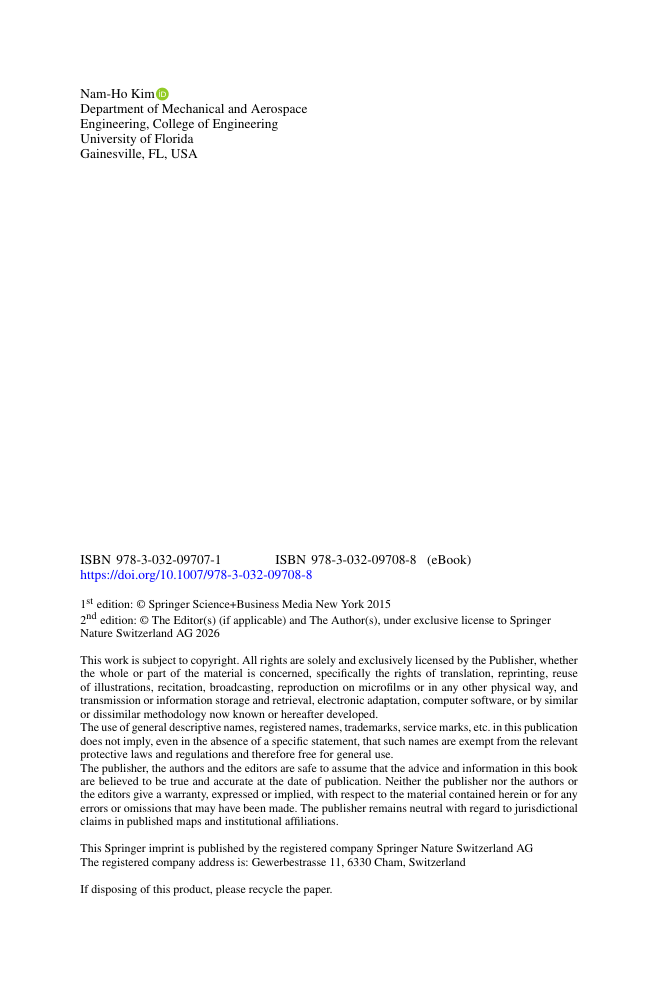
📐 1.2 向量与张量分析
1.2.1 基底与 Einstein 求和约定
三维向量 = 三个基向量的线性组合。Einstein 求和约定：
重复指标自动求和（j = 1,2,3 自动求和）。一个指标在单项中只能出现两次。
Kronecker δ 与内积
u = (3, 4)，v = (1, 2)：
- u · v = 3·1 + 4·2 = 11
- |u| = √(3² + 4²) = 5
- 由 δij：vj δij = vi（重复指标替换）
置换符号 eijk（Levi-Civita）
3D 叉积需要：
1.2.2 向量与张量微积分
梯度算子：
- 标量场的梯度：∇φ（向量）
- 向量场的梯度：∇u（2 阶张量）
- 散度：∇ · u = ∂ui/∂xi（标量）
- Laplace：∇² = ∂²/∂xi²
1.2.3 散度定理（重要积分定理）
体积分 → 面积分。是 FEM 弱形式推导（虚功原理）的核心数学基础。
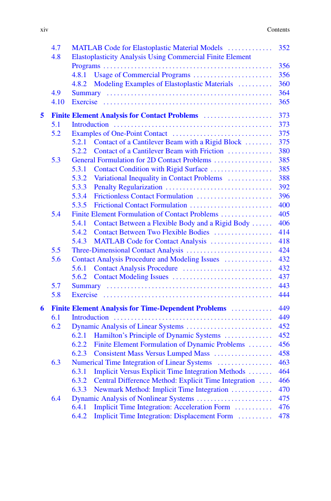
图 1.x 散度定理：体积分等于边界通量
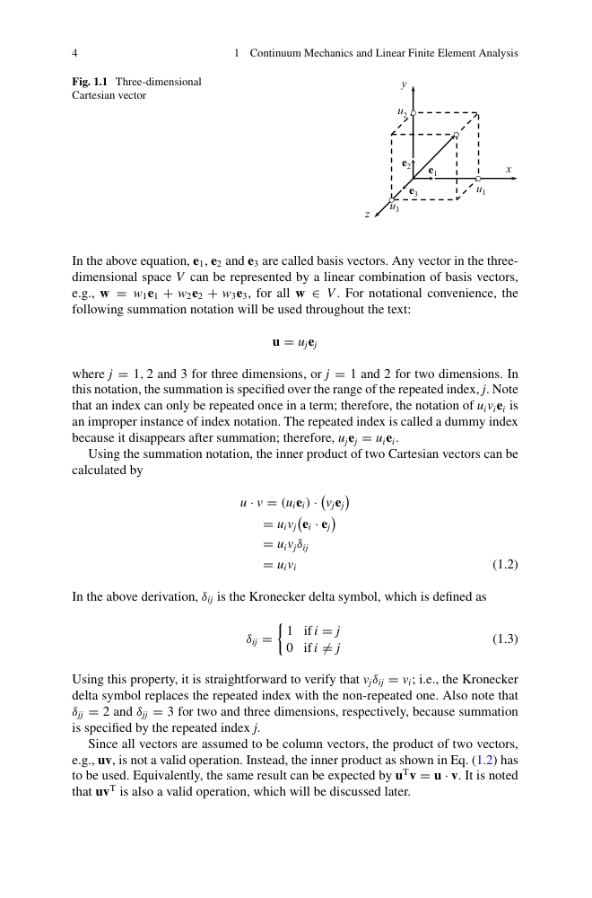
图 1.x 向量内积与 Kronecker δ
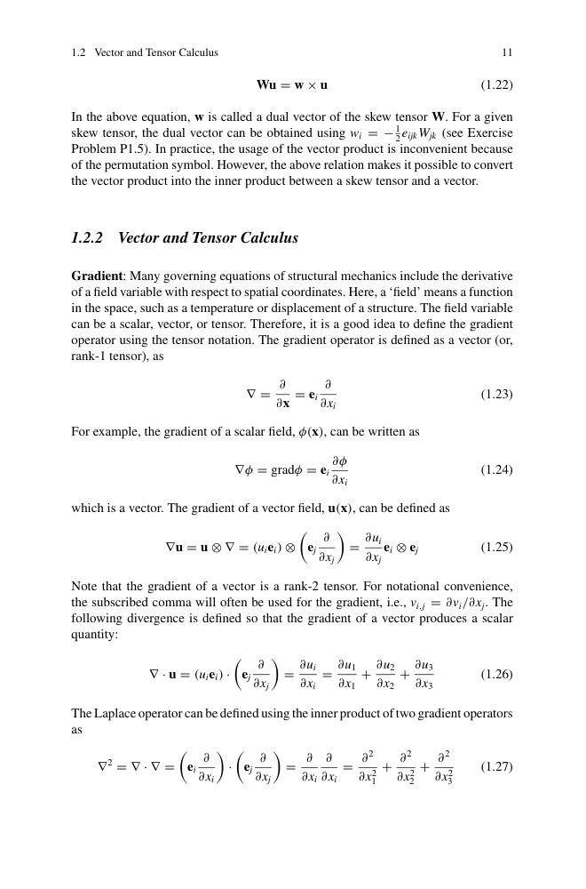
图 1.x 梯度算子与向量微积分
💪 1.3 应力与应变
1.3.1 应力张量
应力 = 单位面积上的内力。3D 中需要2 阶应力张量 σij 描述：
⎣σ12 σ22 σ23⎦
⎡σ13 σ23 σ33⎤
对称 σij = σji（由动量矩守恒，无体力偶时）。共 6 个独立分量：3 正应力 + 3 剪应力。
应力分量 σij 的正负号 = 面的正方向 × 力的正方向。
正法线 + 负力 → 负分量。剪应力在正面 + 沿正轴 → 正。
Voigt 标记
把 6 个独立分量写为 6×1 伪向量：
主应力与不变量
解 det(σ - λI) = 0 → 3 个主应力 σ1, σ2, σ3（对应特征向量方向无剪应力）。
3 个不变量在坐标旋转下保持不变。
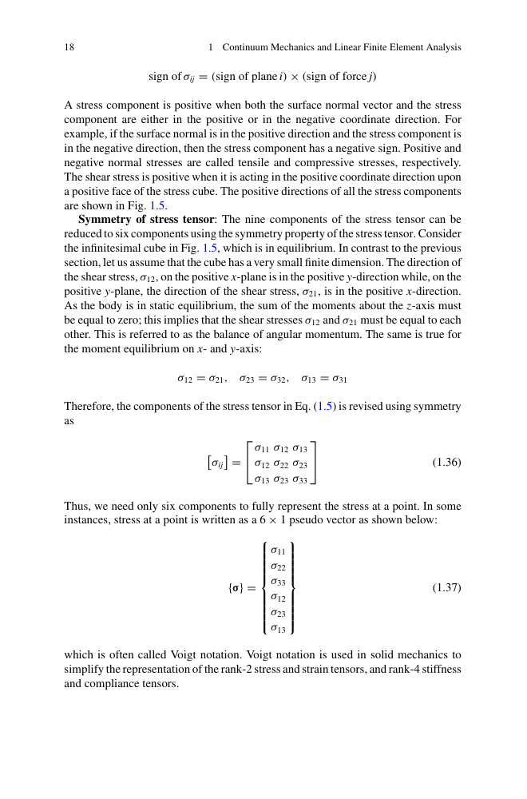
图 1.5 应力张量正方向约定
1.3.2 应变张量
小变形假设下的无穷小应变张量：
- 对角元素 εii：正应变（拉伸 / 压缩）
- 非对角元素 εij：剪应变（角变形的一半）
1.3.3 本构关系（Hooke 定律）
各向同性线弹性：
其中 λ 和 μ 是 Lamé 常数，与工程常数 E（杨氏模量）、ν（泊松比）的关系：
用 E、ν 表达：
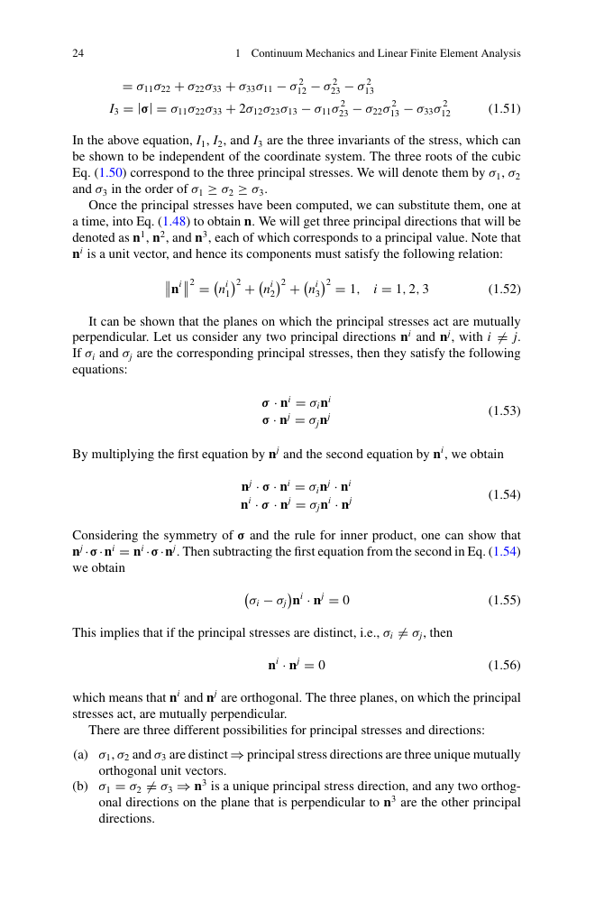
图 1.x 各向同性线弹性本构
钢杆 E = 200 GPa, ν = 0.3，单轴应力 σ11 = 100 MPa（其他方向无应力）：
- 横向应变：ε22 = ε33 = −ν · σ11/E = −0.3 × 100/200000 = −1.5e−4
- 轴向应变：ε11 = σ11/E = 100/200000 = 5e−4
- 体积应变：εii = ε11 + ε22 + ε33 = 5e−4 − 2·1.5e−4 = 2e−4（很小，因 ν < 0.5）
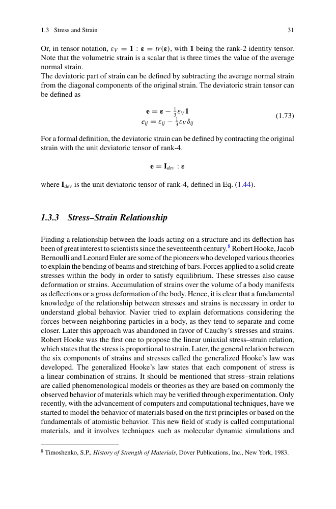
图 1.x 单轴拉伸应力-应变
⚖️ 1.4 连续体力学
1.4.1 边值问题 (BVP)
固体力学 BVP 包含 3 部分：
- 平衡方程（动量守恒）：σij,j + fi = 0
- 几何关系（应变-位移）：εij = (1/2)(ui,j + uj,i)
- 本构关系：σ = f(ε)（如 Hooke 定律）
边界条件：
- 位移边界（Dirichlet）：ui = ūi 在 Γu
- 力边界（Neumann）：σij nj = t̄i 在 Γt
- Γu ∪ Γt = ∂Ω（互补覆盖）
1.4.2 最小势能原理
对保守系统，真实位移场使总势能 Π 取驻值：
总势能 = 应变能 − 外力功：
优点：只要求一阶导，比平衡方程（要求二阶导）更宽松 → FEM 直接基于此。
1.4.3 虚功原理
对任意虚位移 δu（在位移边界上为零）：
虚功原理是变分形式，不要求势能存在 → 适合任何材料（不仅保守系统）。
对保守弹性系统，虚功 ≡ 最小势能。
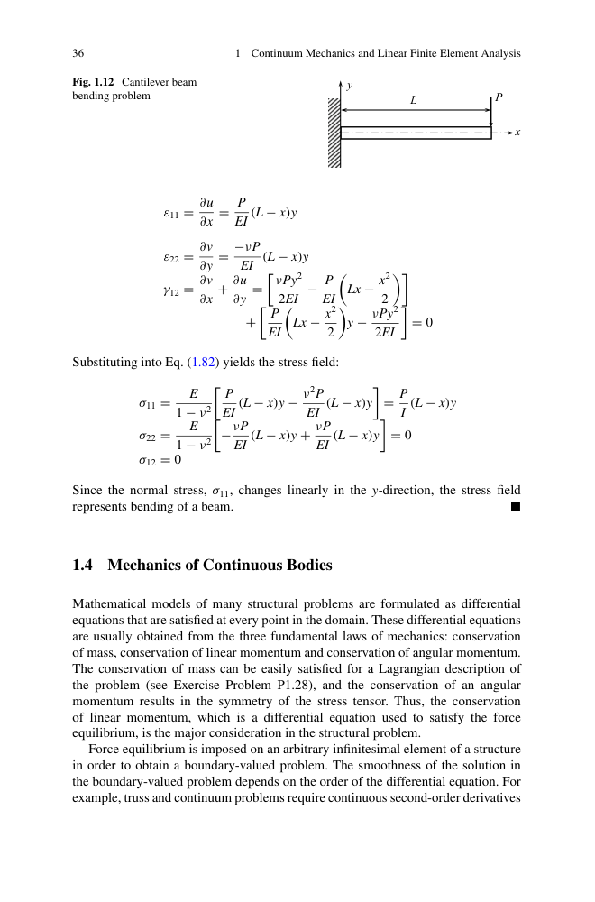
图 1.x 虚功原理的几何解释
🔧 1.5 线性系统有限元分析
1.5.1 有限元近似
把连续体划分为有限个单元，单元内位移用形函数插值：
其中 Na 是形函数，ua 是节点位移（对单元节点 a 求和）。
1.5.2 一维杆单元有限元方程
杆单元（长度 L，面积 A，弹性模量 E）：
⎣−1 1 ⎦
组装：K U = F。
1.5.3 3D 实体单元
八节点六面体（hex8）单元刚度：
其中 B = LN（应变-位移矩阵），C = 材料弹性矩阵，LN 是形函数梯度。
1.5.4 MATLAB 实现
第 1.5.5 节给出 3D 8 节点六面体的 MATLAB 代码（见 PDF p50-58）。
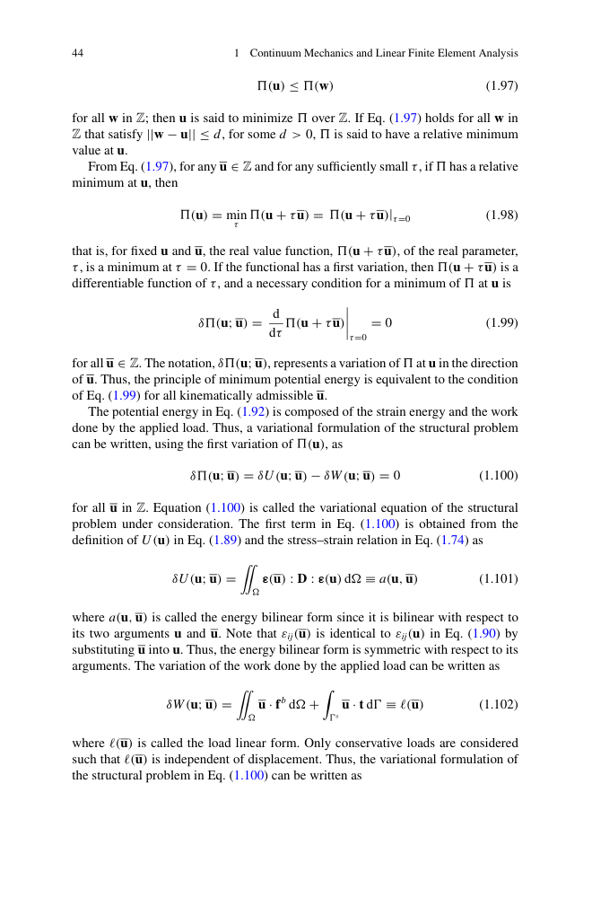
图 1.x 有限元离散与组装
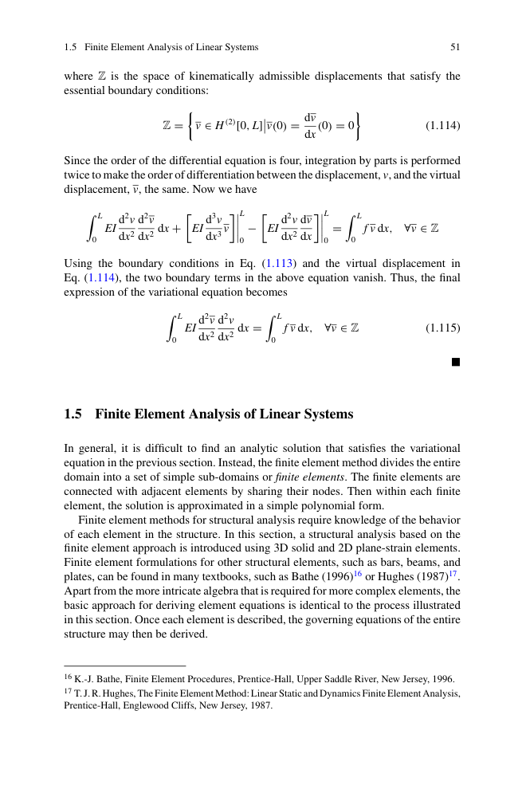
图 1.x 2D 平面应变四边形单元
8 节点六面体单元，节点位移已知，形函数 N 已知：
- ① 计算每个高斯点的 Jacobian J = dx/dξ
- ② 计算 B = LN · J-1
- ③ 应变 ε = B · U
- ④ 应力 σ = C · ε
- ⑤ 单元刚度 Ke = ∫ BT C B |J| dξdηdζ
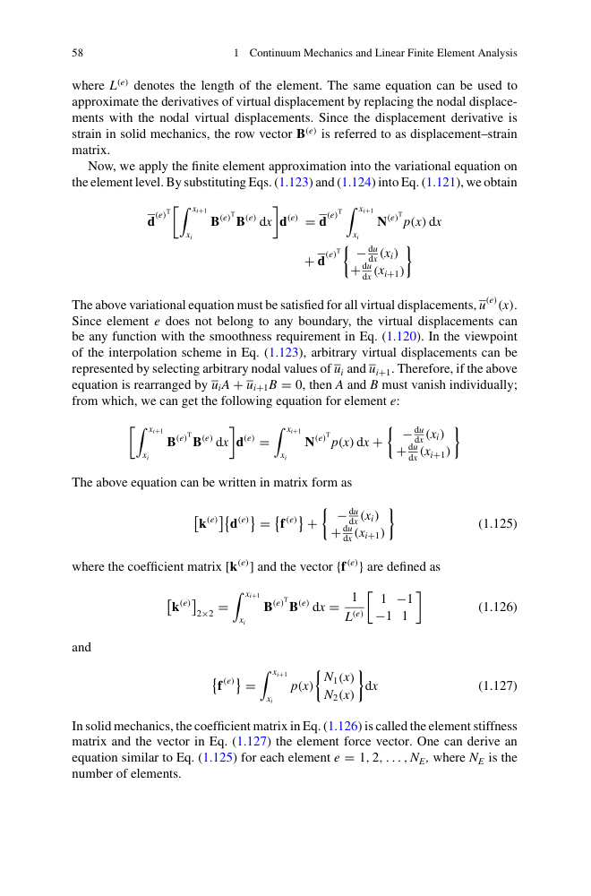
图 1.x 3D 六面体单元网格
📌 1.6 本章总结
- ✅ 向量与张量基础（Einstein 求和、Kronecker δ、Levi-Civita 置换符号）
- ✅ 应力（对称 2 阶张量、6 个独立分量、Voigt 标记、主应力）
- ✅ 应变（无穷小应变张量、正应变 / 剪应变）
- ✅ 本构关系（各向同性线弹性 Hooke 定律、λ/μ 与 E/ν）
- ✅ 边值问题（平衡 + 几何 + 本构 + 边界）
- ✅ 最小势能原理（变分形式）
- ✅ 虚功原理（不要求势能存在）
- ✅ 线性 FEM（形函数、单元刚度、组装、3D hex8 实现）
第 2 章将基于这些基础，扩展到非线性系统（Newton-Raphson 求解）。
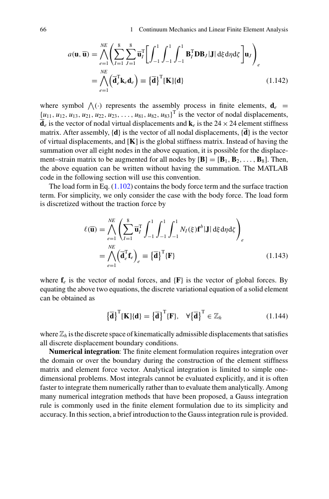
图 1.x 本章关键概念
📝 1.7 习题（PDF p78-86）
建议先做以下题目：
- 1.1 向量求和约定（1 维、2 维、3 维）
- 1.2 应力张量对称性证明（从动量矩）
- 1.3 主应力与不变量计算
- 1.4 单轴拉伸的应力-应变关系
- 1.5 置换符号 eijk 性质
- 1.10 单元刚度矩阵推导（1D 杆 → 2D 桁架 → 3D 梁）
- 1.20 3D 实体单元的有限元方程推导
- 1.30 用 MATLAB 实现 8 节点六面体单元
📚 本章 PDF 关键页面
点击放大看原图，对照学习。
{kind=link}
{kind=link}
{kind=link}
{kind=link}
{kind=link}
{kind=link}
{kind=link}
{kind=link}
{kind=link}
{kind=link}
{kind=link}
{kind=link}